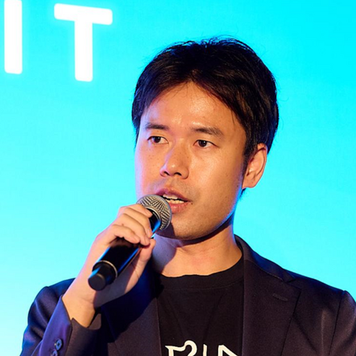

山口 祐 Yu Yamaguchi
Turing株式会社 CTO
自動運転スタートアップの CTO として、完全自動運転の実現に向けた AI の研究開発を統括しています。 カメラ映像から運転操作を直接出力する End-to-End 自動運転を軸に、Vision-Language-Action モデルや世界モデルといったフィジカル基盤モデルの開発と、それを支える大規模分散学習・GPU 計算基盤づくりに取り組んでいます。
産業技術総合研究所と米国 NIST で物理計測の研究をする傍ら、囲碁AI「AQ」と将棋AI「PAL」を個人で開発しました。 国産囲碁AIプロジェクトの研究代表、HEROZ株式会社の執行役員 CAIO を経て、2022年にチューリングへ創業メンバーとして参画しました。 NEDO の生成AI基盤モデル開発事業（GENIAC）では研究代表者を務めています。